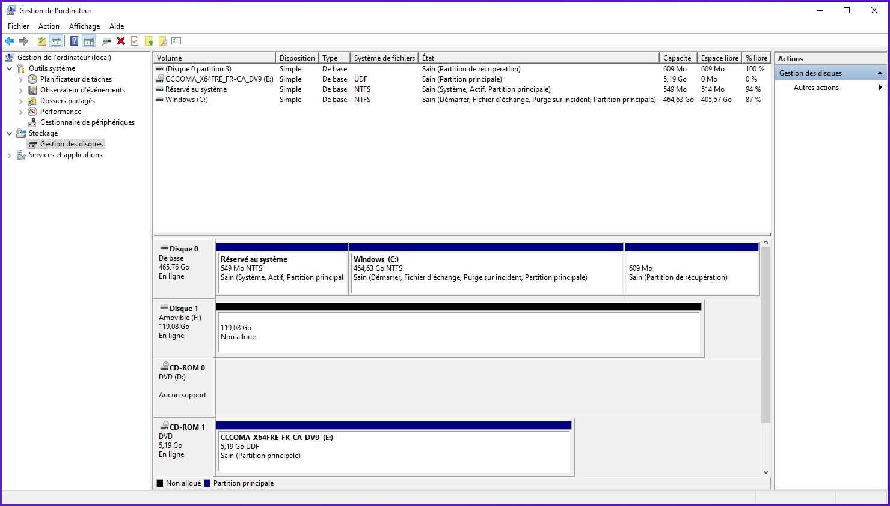
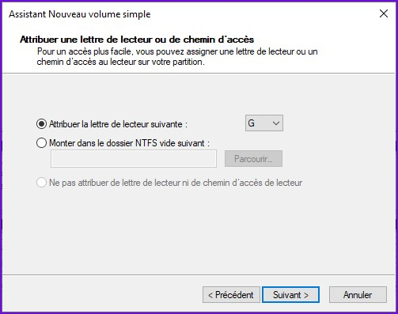

Partitionner le disque amovible
Dans la partie précédente, nous avons téléchargé l'image disque .iso de Windows 10 et monté celle-ci dans un lecteur DVD virtuel accessible depuis l'explorateur de fichiers. Nous avons mis en place tout ce qui est nécessaire pour effectuer l'installation sur le disque amovible.
Tel que mentionné dans l'introduction de ce tutoriel, je vais utiliser une carte microSD SanDisk Extreme de 128 Go (160r/90w) classe 10 + U3 + V30 comme celle-ci pour y installer Windows 10.
SD screenshot hereCette même carte mémoire sera utilisé tout au long de ce tutoriel.
Dans pratiquement tous les cas, une carte mémoire est formatée en usine et prête à l'emploi. On y retrouve généralement un système de fichier FAT32 ou bien exFAT.
Il est hautement recommandé de faire un «wipe» (effacement) de la table de partitions afin de repartir à zéro avec une carte mémoire vierge.
Nous allons devoir recréer cette table en utilisant le format GPT, il est fort probable que les périphériques de stockage amovibles sortent de l'usine en utilisant MBR. En effet, partitionner une carte mémoire ou une clé USB n'est vraiment pas une pratique courante.
Pour effectuer l'effacement de seulement la table de partition sur un périphérique de stockage, il suffit d'utiliser la commande dd qui est présente sur la plupart des systèmes basés UNIX. Vous pouvez démarrer votre ordinateur à partir d'un live CD Ubuntu par exemple pour avoir accès facilement à l'utilitaire en question.
Attention! La commande dd permet d'écrire littéralement n'importe quoi sur n'importe quoi, il y a risque d'erreur et donc perte de données. Débrancher tout autre périphérique de stockage externe et soyez certain que vos disques durs internes ne contiennet également aucune données importantes avant de procéder.
Voici la syntaxe de la commande dd pour effacer les bs * count premiers octets d'un périphérique de stockage.
dd if=[device en entrée]of=[device en sortie] bs=[taille de bloc] count=[nombre de blocs]
Un exemple d'utilisation pour effacer les quatre premiers giga-octets de la carte mémoire 128 Go utilisée pour ce tutoriel. Note, il faut être en root pour pouvoir écrire directement sur un périphérique.
dd if=/dev/zero of=/dev/sdb bs=4096M count=1024
Voici la signification de chacun des paramètres.
- if=[device en entrée] : Le périphérique source, écrire des zéros est suffisant juste pour effacer (pas sécuritairement).
- of=[device en sortie] : Le périphérique de sortie, ici ma carte mémoire est sur /dev/sdb. Pour trouver le bon chemin de périphérique, utiliser un éditeur de partition comme gparted présent sur plusieurs live CDs. Celui-ci devrait donner le chemin avec le nom du fabricant et numéro de model dans la liste des périphérique disponibles.
- bs=[taille de bloc(s)] : Écrire s octets à la fois pour un bloc
- count=[nombre de bloc(n)] : Écrire n blocs
Une fois la table de partition effacée, le périphérique de stockage devient comme non-initialisé. Il est prêt à être re-partitionné.
Connecter le périphérique amovible sur un ordinateur exécutant Windows 10, idéalement la même version qui sera installée sur le dit périphérique (par exemple l'ordinateur sous Windows 10 20H2 et l'image Windows ISO de la version 20H2 aussi. Probablement que la procédure fonctionne avec différentes versions, mais ceci est à vérifier.
Si le message suivant s'affiche suite à l'insertion du périphérique amovible, faire tout simplement «Annuler» pour ne pas le formater tout de suite. Il semblerait que ce soit les cartes mémoires insérées dans les lecteurs de cartes font apparaître ce message, pas les clés USB ni les disques durs externes.
Aller dans le gestionnaire de Windows. Faire clique-droit sur l'icône «Poste de Travail» (ou «Ordinateur»), puis «Gérer».
Dans le menu à gauche, cliquer sur «Gestion des disques» dans le sous-menu «Stockage».
On y voit alors tous les périphériques de stockage détectés par Windows avec plusieurs informations sur eux tels que la capacité totale, utilisée ainsi que le point de montage (lettre de lecteur) et plusieurs autres.
Notre carte SD de 128 Go est montée en tant que F:/ et vue par Windows comme étant au format RAW. Ce format veut généralement dire non-reconnu ou corrompu dans un environnement Windows. Ce qui est en quelque sorte normal, car la carte SD ne contient pas de table de partition. Cependant, Windows demande normalement d'initialiser le lecteur lorsqu'il n'y a pas de table de partition trouvée. Probablement qu'il voit cela différent pour les cartes SD et les affiche directement comme étant RAW.
Cette partition RAW n'a aucune raison d'être sur un disque vide, nous allons donc supprimer celle-ci. Clique droit sur la partition en question de la carte SD, puis «Supprimer le volume».
L'espace devient alors «Non-alloué» et donc prêt à être utilisé pour de nouvelles partitions.
Cependant, tel que mentionné ci-haut, Windows ne nous a pas présenté l'écran d'initialisation pour un périphérique de stockage sans table de partition alors que normalement il aurait dû. C'est comme si l'initialisation avait été fait de façon transparente. Le problème c'est que le périphérique semble avoir été initialisé avec le schéma de partitionnement MBR (Master Boot Record) alors que pour que ce soit démarrable, il est préférable d'utiliser GPT (GUID partition table).
Il faut donc changer le type de la table de partition, ce qui est au meilleur cas lorsqu'il n'y a aucune partition sur le volume. Pour ce faire, nous utilisons un outil intégré à Windows nommé DiskPart. C'est un outil en ligne de commandes qui permet d'effectuer toutes les opérations que l'on peut faire dans l'interface graphique du gestionnaire de disques avec en plus de certaines autres plus avancées dont on aura besoin pour la suite.
Exécuter cmd.exe en tant qu'administrateur système.
Exécuter diskpart tout simplement avec la commande diskpart.
Voir la liste des disques détectés par Windows, avec la commande suivante.
list disk
Avec sa taille (120 Go), il est facile de voir que notre carte SD porte l'ID Disque 1 puisque c'est le seul disque que j'ai qui a cette taille. Si vous avez des disques de même taille, il est possible de retourner au gestionnaire de disques et de vérifier l'ID de celui qui est actuellement non-alloué.
Remarque : Pour un disque utilisant le schéma de table MBR, il n'y a pas d'astérix (*) à la fin de la ligne du disque (après "octet" dans la sortie de DiskPart). Pour un disque en GPT, il y a un astérix.
Sélectionner le disque correspondant à la carte SD, ici c'est l'ID Disque 1 (faire attention à en être bien certain).
select disk [ID]
On vérifie en demandant la liste des partitions de ce disque, normalement il devrait y en avoir aucune.
list partition
Nous allons utiliser la commande convert [type] pour convertir le disque sélectionné de MBR vers GPT. Voir la syntaxe de la commande en entrant la commande suivante.
help convert

Convertir le disque sélectionné avec la commande suivante.
convert GPT
Ne pas fermer l'invite de commandes maintenant, nous allons en avoir besoin pour plus tard. Retourner dans le gestionnaire de disques Windows, nous sommes prêts à partitionner le périphérique amovible.
Nous allons créer deux partitons sur le périphérique amovible, soit une utilisée pour le démarrage et une autre pour le système d'exploitation. Choisir le disque correspondant à la carte SD qui est normalement tout non-alloué, clique-droit puis faire «Nouveau volume simple...».
Il s'agit ensuite de suivre l'assistant de création d'un nouveau volume simple. Cliquer sur le bouton «Suivant».

La première partition que nous devons créer est celle qui contiendra les fichiers de démarrage du système d'exploitation. Plus précisément, ce sera la partition EFI (Extensible Firmware Interface). Celle-ci est nécessaire lorsque l'ordinateur utilise UEFI, celui-ci cherchera un chargeur d'amorçage de second niveau stocké sur cette partition pour poursuivre le démarrage. Généralement, une taille de 128 Mo est largement suffisante pour cette partition (le minimum recommandé étant 100 Mo selon Microsoft).
Choisir 128 Mo, puis faire «Suivant».
Sélectionner le chemin pour le lecteur, n'importe quelle lettre libre fera l'affaire. Je choisis G:/ pour la partition EFI. Faire ensuite «Suivant» pour continuer.
À l'écran de formatage, choisir les options suivantes.
- Système de fichiers : FAT32
- Taille d'unité d'allocation : Par défaut
- Nom de volume : EFI
Vérifier qu'il n'y a pas d'erreurs dans les options choisies, puis faire «Terminer» pour fermer l'assistant.
Après quelques secondes, la partition EFI sera crée.
La procédure est semblable pour créer la partition du système d'exploitation. Choisir la partition non-allouée sur le disque correspondant à la carte SD, clique-droit puis faire «Nouveau volume simple...».
Suivre ensuite l'assistant de création d'un nouveau volume simple. Cliquer sur le bouton «Suivant».
Ici, choisir la taille voulue pour la partition du système d'exploitation. Généralement, on prend la taille maximale possible afin d'utiliser tout le disque. Cependant, rien ne vous empêche de laisser de l'espace non-allouée pour créer des partitions supplémentaires (données par exemple). Cliquer ensuite sur le bouton «Suivant» pour continuer.
Sélectionner le chemin pour le lecteur, n'importe quelle lettre libre fera l'affaire. Je choisis H:/ pour la partition du système d'exploitation. Faire ensuite «Suivant» pour continuer.
À l'écran de formatage, choisir les options suivantes.
- Système de fichiers : NTFS
- Taille d'unité d'allocation : Par défaut
- Nom de volume : ["Datastore" si démarrage sur VHD, "Windows" si démarrage traditionnel]
Note : Choisir le nom de volume selon la méthode d'installation du système voulue. Pour ce tutoriel, l'installation de Windows sera effectuée sur un disque virtuel (VHD) et le chargeur d'amorçage sera configuré pour démarrer sur ce disque. Nous allons voir dans la prochaine section comment effectuer ce type d'installation. Cependant, ceci est facultatif, vous pourrez installer Windows directement sur la partition que nous allons créer.
Vérifier qu'il n'y a pas d'erreurs dans les options choisies, puis faire «Terminer» pour fermer l'assistant.
Après quelques secondes, la partition sera crée.
Nos partitions sur le disque amovible sont prêtes à être utilisées. Pour l'installation de Windows, nous avons deux options de configuration possible.
Installation sur un disque dur virtuel : On crée un conteneur qui agit comme un disque dur standard mais qui est sous forme d'un fichier sur un disque physique. Le disque dur virtuel sera partitionné, puis le système Windows sera installé sur cette partition.
Installation traditionnelle : Le système Windows est installé directement sur une partition du disque physique. C'est comme sur un ordinateur standard.
Continuer avec la partie 3 de ce guide si vous voulez utiliser la méthode du démarrage sur VHD, sinon la partie 4 pour passer directement à l'installation du système Windows. Note, les avantages de la méthode avec le VHD sont présentés dans la partie 3.